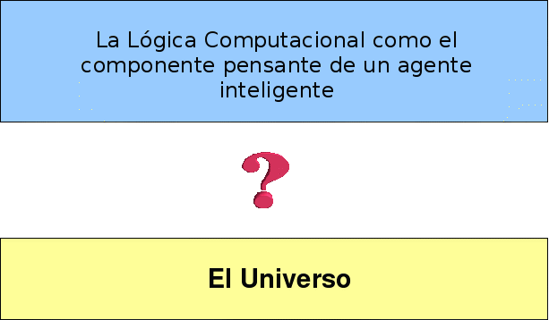

Imagine que Ud viaja en el metro de Londres (o el de cualquier ciudad) y repentinamente siente una mano ajena en uno de sus bolsillos. Para su fortuna, ve Ud un aviso que le dice exactamente qué debe hacer.
Emergencias
Pulse el botón de la alarma
para alertar al conductor.
El conductor se detendrá
si alguna parte del tren está dentro de una estación
de lo contrario, el tren continuará hasta la siguiente estación,
donde será más fácil conseguir ayuda.
Se penalizará con 50 libras
el uso inapropiado.
El propósito del Aviso de Emergencia es el de regular la conducta de los pasajeros en caso de emergencias. En este sentido, funciona como un programa, no para controlar un computador, sino para controlar a las personas.
Para cumplir con su propósito, el Aviso no debe ser ambigüo, de tal forma que no se pueda mal-interpretar el significado establecido. Además, debe ser fácil de entender, de manera que el lector le pueda procesar con el mínimo de esfuerzo. Al igual que un programa para un computador, debe también ser eficiente, alcanzando su propósito (obtener ayuda, en este caso) tan rápido como sea posible.
La naturaleza computacional del Aviso de Emergencia es más fácil de notar en la primera oración.
Pulse el botón de la alarma
para alertar al conductor.
Esta oración tiene la forma de un procedimiento de reducción de metas:
Reduzca la meta de alertar al conductor
a la sub-meta de presionar el botón de alarma.
En general, buena parte de nuestra comunicación entre humanos puede ser entendida en tales términos computacionales, en los que un humano intenta programar a otros para obtener la respuesta que desea. En este caso, la gerencia del Metro intenta programar a los pasajeros para que se comporten con efectividad y eficiencia en caso de emergencia.
Esta interpretación de la comunicación humana puede ser indignante a primera vista, porque parece contemplar a la gente como meras máquinas. Esa no es mi intención. Lo que intento proponer es que el pensar en las personas como agentes computacionales puede, algunas veces, ayudarnos a formular formas de comunicarnos con ellas en términos más efectivos y más eficientes. Más efectivos porque nuestros "programas" servirán mejor a nuestras intenciones. Más eficientes porque el receptor podrá procesar y reaccionar al programa con menos esfuerzo.
La comunicación humana, sin embargo, también puede ser comprendida en términos lógicos. Así entendida, una comunicación es una colección de oraciones con una forma subyacente que le proporciona su significado. Para entender una oración en lenguaje natural, el lector o quien escucha tiene que descifrar su estructura superficial para extraer su significado. Necesita luego asimilar su significado para acomodarlo en su red de creencias. Estas creencias incluyen tanto creencias generales fundamentales como aquellas obtenidas de oraciones anteriores en la misma comunicación.
Luego de extraer esa colección de significados, el receptor de la comunicación puede usarlos para resolver problemas que surjan en su ambiente y en los que esos significados sean relevantes. En ese sentido, las oraciones del lenguaje natural son como un programa para el computador. El proceso de extraer los significados lógicos de las oraciones es como el compilar un programa de su forma externa a su forma interna, y el proceso de usar esos significados para resolver problemas es como el ejecutar el programa compilado.
En el ejemplo del Aviso de Emergencia, la relación entre la forma externa de la oración en Español (o en Inglés) y su forma lógica interna es más evidente en los casos de la segunda y la tercera oración del Aviso, gracias principalmente a su uso de los términos lógicos "si", "alguna" y "de lo contrario".
Uno puede verse tentado a afirmar que el aviso es tan fácil de entender debido a que la estructura superficial de su forma externa es tan cercana a la forma interna del significado pretendido para esas oraciones.
De hecho, la segunda y la tercera oración son más ambigüas de lo que parece a primera vista. En particular, la segunda oración no dice claramente que es lo que el conductor dejará de hacer (¿se detendrá?). Es poco probable que sea, por ejemplo, que:
El conductor dejará de causar la emergencia
si alguna parte del tren está dentro de una estación.
En lugar de eso, es casi seguro que signifique:
El conductor detendrá el tren en una estación
si alguna parte del tren está dentro de esa estación.
Sin embargo, incluso esta interpretación no termina de capturar el significado pretendido para la oración. Si se le ubica en el contexto de la primer oración, la segunda oración tiene una condición adicional implícita, es decir, que el conductor ha sido alertado acerca de una emergencia. Por lo tanto, el significado pretendido de la segunda oración es:
El conductor detendrá el tren en una estación
si está al tanto de una emergencia
y alguna parte del tren está dentro de esa estación.
Sin la condición adicional, la oración significa literalmente que el conductor detendrá el tren cuando quiera que el tren esté en una estación, haya o nó una emergencia. Si ese fuese el caso, un tren nunca podría salir de la estación una vez que llegara a ella. Para entender la oración, el lector del Aviso necesita tanto conocimiento contextual general acerca del cómo se comportan normalmente los conductores de trenes así como conocimiento específico del contexto de las oraciones anteriores en el Aviso.
Siguiendo con nuestra interpretacion de la segunda oración, es claro ahora que el significado pretendido para la tercera oración es:
El conductor detendrá el tren en la siguiente estación
y
allí se puede brindar ayuda mejor que entre las estaciones.
si ha sido alertado de una emergencia
y ninguna parte del tren está en una estación
En el lenguaje natural, es costumbre omitir condiciones tales como “parte del tren está en una estación”, que se pueden obtener del contexto. En lógica formal, sin embargo, las oraciones no pueden confiarse al contexto y deben ser planteadas con claridad.
Puesto que las oraciones en lógica formal suelen ser explícitas y no se confían al contexto, Ud bien podría tomar una colección de oraciones escritas en lógica formal, arrojarlas al aire, como con un mazo de cartas y dejarlas caer en cualquier orden. La colección resultante de oraciones tiene el mismo significado que la colección en el orden original.
Así que, en teoría, si este libro fuese escrito es forma puramente lógica, Ud podría leerlo al revés, al derecho o en cualquier orden y, en todo caso, tendría el mismo significado. De hecho, en buena medida, el trabajo de escribir un libro como este está en encontrar un orden apropiado para presentar las ideas, de manera que sean tan fáciles de entender como sea posible.
La primera oración del Aviso ha sido escrita en forma de un procedimiento, lo cual oculta su forma lógica subyacente. En general, un procedimiento para reducir metas con la forma:
Reduzca meta a sub-metas.
oculta una implicación lógica como:
meta si sub-metas.
La conducta reductora de metas de ese procedimiento pueden obtenerse de esta implicación razonando hacia atrás:
Para concluir que una meta puede ser resuelta,
muestre que las sub-metas pueden ser resueltas
De manera que la primera oración del Aviso de Emergencia tiene esta forma lógica oculta:
Ud alerta al conductor
si pulsa el botón de la señal de alarma.
El uso del razonamiento hacia atrás para convertir implicaciones en procedimientos de redución de metas se conoce como programación lógica. Las implicaciones así dispuestas son llamadas programas lógicos. La programación lógica fue bastante popular durante un tiempo en la década de 1980 y luego cayó en desuso. Una de las metas de este libro es mostrar que la programación lógica puede ser útil no sólo para hacer computación sino también para el razonamiento humano.
El razonamiento hacia atrás contrasta con el razonamiento hacia adelante que, probablemente, es más familiar para más personas. Dada una implicación con la forma:
si condiciones entonces conclusión
y una colección de oraciones que puedan compararse y aparearse con las condiciones, el razonamiento hacia adelante deriva la conclusión como una consecuencia lógica de las condiciones.
Cuando debemos usar razonamiento hacia atrás o hacia adelante es uno de los asuntos más importantes investigados en este libro [1].
En los lenguajes naturales, las implicaciones frecuentemente se ocultan bajo la superficie, bien en forma de procedimientos, bien en forma declarativa. Por ejemplo, la última oración del Aviso es una oración declarativa con la siguiente forma lógica subyacente:
Ud obtiene una multa de 50 libras
si pulsa el botón de alarma cuando no es apropiado.
Razonando hacia atrás, esta implicación se convierte en el procedimiento:
Para obtener una multa de 50 libras,
pulse el botón de alarma cuando no es apropiado.
Es poco probable que un pasajero quiera ganarse una multa de 50 libras y, por tanto, es poco probable que el pasajero quiera razonar hacia atrás para reducir esa tan poco atractiva meta a sus sub-metas.
Es más probable que el pasajero use el razonamiento hacia adelante para derivar que usar la señal de alarma cuando no es apropiado tendrá consecuencias no deseables. Así que oración actúa como una restricción sobre la conducta del pasajero, antes que como un generador.
Puesto que los procedimientos de reducción de metas restringen las implicaciones al razonamiento hacia atrás, la forma procedimental de esa oración no es la apropiada. Esto explica porque esa oración es escrita declarativamente y no en forma de procedimiento.
De hecho, sólo la primera oración del Aviso de Emergencia es escrita en forma procedimental, y sólo esta oración del Aviso funciona como un programa normal, para invocar la conducta deseada en los pasajeros del tren. La cuarta oración, por su parte, funciona como una restricción, para evitar conductas indeseadas.
Las oraciones segunda y tercera, por otro lado, describen parte de un programa que debe ser ejecutado por un agente diferente: el conductor del tren. Estas oraciones son escritas declarativamente y no procedimentalmente, precísamente porque deben ser ejecutadas por un agente diferente, no por el agente que observa la emergencia en primer lugar.
Se sobreentiende que el propósito o meta [2] del Aviso es explicar a los pasajeros como pueden obtener ayuda en una emergencia. Esta es la razón para que la tercera oración incluya la frase:
donde será más fácil conseguir ayuda.
Esta frase explica el porqué el conductor no detiene el tren inmediatamente cuando no está en una estación.
La primera oración del Aviso podría ser reescrita con tres oraciones, para hacer explícito su propósito:
Si ocurre una emergencia, consiga ayuda.
Ud consigue ayuda si alerta al conductor.
Ud alerta al conductor si pulsa el botón de la señal de alarma.
Aquí, para variar, he escrito las oraciones segunda y tercera como programas lógicos. Usados para razonar hacia atrás, se comportan como los procedimientos:
Para conseguir ayuda, alerte al conductor.
Para alertar al conductor, pulse el botón de la señal de alarma.
La primera oración también tiene la forma de una implicación. Pero su conclusión es imperativa (consiga ayuda) antes que declarativa (Ud conseguirá ayuda). Es como una regla de condición-acción, pero más general, puesto que su conclusión es una meta, en lugar de ser sólo una acción. Es una regla condición-meta.
Las implicaciones con conclusiones imperativas (incluyendo reglas de condición-acción) pueden ser usadas para “razonar hacia adelante”, como las implicaciones lógicas. Sin embargo, aquellas no tienen todas las propiedades de las implicaciones lógicas con conclusiones declarativas. Las implicaciones lógicas pueden ser usadas para razonar hacia adelante y hacia atrás, pero las implicaciones con conclusiones imperativas sólo pueden ser usadas para razonar hacia adelante. Las oraciones declarativas pueden ser ciertas o falsas. Las oraciones imperativas sólo pueden ser obedecidas o des-obedecidas. Veremos en capítulos posteriores como las oraciones imperativas pueden ser transformadas a formas declarativas asignándoles el estatus de metas y distinguiendolas de las creencias.
Este capítulo pretende dar una impresión general del resto del libro. Muestra, con un ejemplo, como las oraciones en Español (y también en el original en Inglés) pueden ser vistas tanto en términos lógicos como en términos computacionales. También muestra como estas dos visiones se integran en la programación lógica, un caso particular de la lógica computacional, tópico de este libro.
La lógica computacional ha sido usada para desarrollar aplicaciones para computadores, especialmente en la Inteligencia Artificial. Sin embargo, en este libro me concentro en las potencialidades de su uso para que las personas mejoren su propias habilidades de razonamiento y comunicación.
La lógica tradicional fue, originalmente, un modelo del razonamiento humano, que ha caído en descrédito en los últimos años. Otros modelos tales como las reglas de condición-acción han tomado buena parte de su espacio. Uno de los propósitos principales de este libro es mostrar como las reglas de condición-acción y la lógica pueden ser reconciliadas y combinadas.
Una buena parte del problema con la lógica tradicional es su falta de consideración para con una cantidad de asuntos muy importantes para el razonamiento de lo humanos. Entre tales cosas, la necesidad de:
distinguir entre metas y creencias.
estar abierta a cambios en el mundo.
vincular el pensar acerca de las acciones con el hecho de realizzarlas
vincular el uso de la lógica para pensar con el uso de la probabilidad y de la utilidad para decidir cuál acción realiza.
razonar por omisión y con reglas con excepciones.
combinar argumentos tanto a favor como en contra de una conclusión.
Veremos cómo la lógica computacional contempla estos problemas en los siguientes capítulos.
Además, compararemos y trataremos de reconciliar la lógica computacional con puntos de vista rivales acerca del razonamiento humano, tales como:
Reglas de condición-acción.
Búsqueda.
Modelos mentales.
Orientación a objetos.
Esquemas y estereotipos.
Redes neuronales. .
Finalmente, investigaremos la aplicación de la lógica computacional a dos áreas mayores:
Razonamiento legal.
Comunicación humana.
El problema que este libro contempla puede ser ilustrado de esta manera:

[1] Es normal en la lógica formal el escribir implicaciones en dirección hacia adelante, así: si condiciones entonces conclusiones. Esta es la razón por la que el razonamiento desde las condiciones y hacia las conclusiones es llamado razonamiento hacia adelante.
Lo cierto es que las implicaciones lógicas se pueden usar para razonar tanto hacia adelante como hacia atrás, no importa cómo estén escritas. Sin embargo, solemos escribirlas de una manera en lugar de la otra cuando tenemos una dirección preferida en mente.
[2] Los términos “meta” y “propósito” son intercambiables. Otros términos que algunas veces tienen el mismo significado son “motivación”, “razón”, “interes”, “deseo”, “objetivo”, “misión”, “objeto”, “blanco”, etc (N.T. Hemos agregado algunos términos en la lista, respecto al original en inglés, i.e. “blanco” en el sentido de “tiro al blanco” que se aborda con la palabra inglesa “target”. Es notable que meta y propósito son también intercambiables en Español, aunque en el uso cotidiano “propósito” es más trascendente. Otro término que se confunde o intercambia con “meta” y “propósito”, especialmente con este último, es “intención”).
Kowalski. R.A. Lógica Computacional y el Pensamiento Humano (Traducido por Jacinto Dávila) 2011-2018